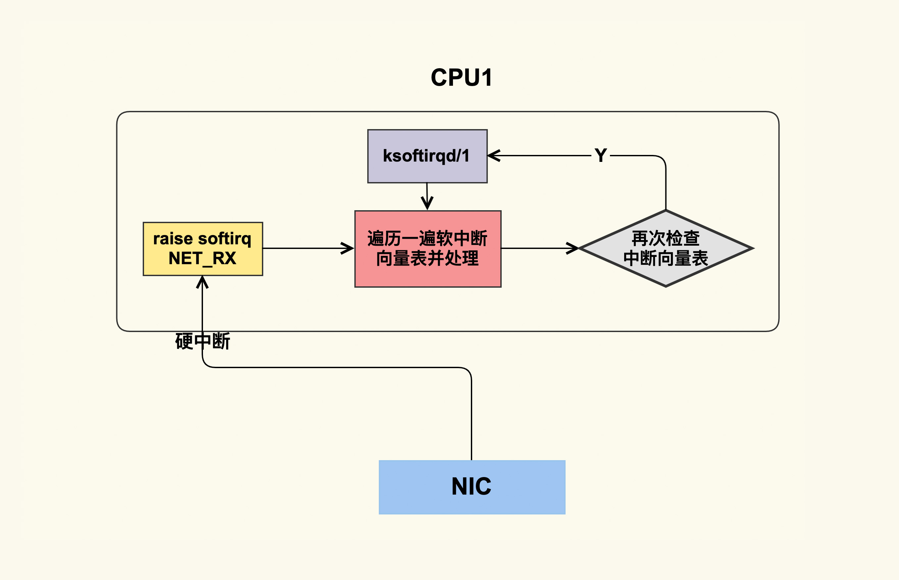

- 00 开篇词 如何让Linux内核更好地服务应用程序？.md.html
- 01 基础篇 如何用数据观测Page Cache？.md.html
- 02 基础篇 Page Cache是怎样产生和释放的？.md.html
- 03 案例篇 如何处理Page Cache难以回收产生的load飙高问题？.md.html
- 04 案例篇 如何处理Page Cache容易回收引起的业务性能问题？.md.html
- 05 分析篇 如何判断问题是否由Page Cache产生的？.md.html
- 06 基础篇 进程的哪些内存类型容易引起内存泄漏？.md.html
- 07 案例篇 如何预防内存泄漏导致的系统假死？.md.html
- 08 案例篇 Shmem：进程没有消耗内存，内存哪去了？.md.html
- 09 分析篇 如何对内核内存泄漏做些基础的分析？.md.html
- 10 分析篇 内存泄漏时，我们该如何一步步找到根因？.md.html
- 11 基础篇 TCP连接的建立和断开受哪些系统配置影响？.md.html
- 12 基础篇 TCP收发包过程会受哪些配置项影响？.md.html
- 13 案例篇 TCP拥塞控制是如何导致业务性能抖动的？.md.html
- 14 案例篇 TCP端到端时延变大，怎样判断是哪里出现了问题？.md.html
- 15 分析篇 如何高效地分析TCP重传问题？.md.html
- 16 套路篇 如何分析常见的TCP问题？.md.html
- 17 基础篇 CPU是如何执行任务的？.md.html
- 18 案例篇 业务是否需要使用透明大页：水可载舟，亦可覆舟？.md.html
- 19 案例篇 网络吞吐高的业务是否需要开启网卡特性呢？.md.html
- 20 分析篇 如何分析CPU利用率飙高问题 ？.md.html
- 加餐 我是如何使用tracepoint来分析内核Bug的？.md.html
- 结束语 第一次看内核代码，我也很懵逼.md.html
- 捐赠
19 案例篇 网络吞吐高的业务是否需要开启网卡特性呢？
你好，我是邵亚方。
通过上一讲我们对CPU利用率的细化，相信你已经知道，对于应用而言，它的目标是让CPU的开销尽量用在执行用户代码上，而非其他方面。usr利用率越高，说明CPU的效率越高。如果usr低，就说明CPU执行应用的效率不高。在第18讲里，我们还讲了CPU时间浪费在sys里的案例。那今天这一讲，我们一起来看看CPU在softirq上花费过多时间所引起的业务性能下降问题，这也是我们在生产环境中经常遇到的一类问题。接下来我会为你讲解相关案例，以及这类问题常用的观察方法。
中断与业务进程之间是如何相互干扰的？
这是我多年以前遇到的一个案例，当时业务反馈说为了提升QPS（Query per Second），他们开启了RPS（Receivce Packet Steering）来模拟网卡多队列，没想到开启RPS反而导致了QPS明显下降，不知道是什么原因。
其实，这类特定行为改变引起的性能下降问题相对好分析一些。最简单的方式就是去对比这个行为前后的性能数据。即使你不清楚RPS是什么，也不知道它背后的机制，你也可以采集需要的性能指标进行对比分析，然后判断问题可能出在哪里。这些性能指标包括CPU指标，内存指标，I/O指标，网络指标等，我们可以使用dstat来观察它们的变化。
在业务打开RPS之前的性能指标：
$ dstat
You did not select any stats, using -cdngy by default.
----total-cpu-usage---- -dsk/total- -net/total- ---paging-- ---system--
usr sys idl wai hiq siq| read writ| recv send| in out | int csw
64 23 6 0 0 7| 0 8192B|7917k 12M| 0 0 | 27k 1922
64 22 6 0 0 8| 0 0 |7739k 12M| 0 0 | 26k 2210
61 23 9 0 0 7| 0 0 |7397k 11M| 0 0 | 25k 2267
打开了RPS之后的性能指标：
$ dstat
You did not select any stats, using -cdngy by default.
----total-cpu-usage---- -dsk/total- -net/total- ---paging-- ---system--
usr sys idl wai hiq siq| read writ| recv send| in out | int csw
62 23 4 0 0 12| 0 0 |7096k 11M| 0 0 | 49k 2261
74 13 4 0 0 9| 0 0 |4003k 6543k| 0 0 | 31k 2004
59 22 5 0 0 13| 0 4096B|6710k 10M| 0 0 | 48k 2220
我们可以看到，打开RPS后，CPU的利用率有所升高。其中，siq即软中断利用率明显增加，int即硬中断频率也明显升高，而net这一项里的网络吞吐数据则有所下降。也就是说，在网络吞吐不升反降的情况下，系统的硬中断和软中断都明显增加。由此我们可以推断出，网络吞吐的下降应该是中断增加导致的结果。
那么，接下来我们就需要分析到底是什么类型的软中断和硬中断增加了，以便于找到问题的源头。
系统中存在很多硬中断，这些硬中断及其发生频率我们都可以通过/proc/interruptes这个文件来查看：
$ cat /proc/interrupts
如果你想要了解某个中断的详细情况，比如中断亲和性，那你可以通过/proc/irq/[irq_num]来查看，比如：
$ cat /proc/irq/123/smp_affinity
软中断可以通过/proc/softirq来查看：
$ cat /proc/softirqs
当然了，你也可以写一些脚本来观察各个硬中断和软中断的发生频率，从而更加直观地查看是哪些中断发生得太频繁。
关于硬中断和软中断的区别，你可能多少有些了解，软中断是用来处理硬中断在短时间内无法完成的任务的。硬中断由于执行时间短，所以如果它的发生频率不高的话，一般不会给业务带来明显影响。但是由于内核里关中断的地方太多，所以进程往往会给硬中断带来一些影响，比如进程关中断时间太长会导致网络报文无法及时处理，进而引起业务性能抖动。
我们在生产环境中就遇到过这种关中断时间太长引起的抖动案例，比如cat /proc/slabinfo这个操作里的逻辑关中断太长，它会致使业务RT抖动。这是因为该命令会统计系统中所有的slab数量，并显示出来，在统计的过程中会关中断。如果系统中的slab数量太多，就会导致关中断的时间太长，进而引起网络包阻塞，ping延迟也会因此明显变大。所以，在生产环境中我们要尽量避免去采集/proc/slabinfo，否则可能会引起业务抖动。
由于/proc/slabinfo很危险，所以它的访问权限也从2.6.32版本时的0644更改为了后来的0400，也就是说只有root用户才能够读取它，这在一定程度上避免了一些问题。如果你的系统是2.6.32版本的内核，你就需要特别注意该问题。
如果你要分析因中断关闭时间太长而引发的问题，有一种最简单的方式，就是使用ftrace的irqsoff功能。它不仅可以统计出中断被关闭了多长时间，还可以统计出为什么会关闭中断。不过，你需要注意的是，irqsoff功能依赖于CONFIG_IRQSOFF_TRACER这个配置项，如果你的内核没有打开该配置项，那你就需要使用其他方式来去追踪了。
如何使用irqsoff呢？首先，你需要去查看你的系统是否支持了irqsoff这个tracer：
$ cat /sys/kernel/debug/tracing/available_tracers
如果显示的内容包含了irqsoff，说明系统支持该功能，你就可以打开它进行追踪了：
$ echo irqsoff > /sys/kernel/debug/tracing/current_tracer
接下来，你就可以通过/sys/kernel/debug/tracing/trace_pipe和trace这两个文件，来观察系统中的irqsoff事件了。
我们知道，相比硬中断，软中断的执行时间会长一些，而且它也会抢占正在执行进程的CPU，从而导致进程在它运行期间只能等待。所以，相对而言它会更容易给业务带来延迟。那我们怎么对软中断的执行频率以及执行耗时进行观测呢？你可以通过如下两个tracepoints来进行观测：
/sys/kernel/debug/tracing/events/irq/softirq_entry
/sys/kernel/debug/tracing/events/irq/softirq_exit
这两个tracepoint分别表示软中断的进入和退出，退出时间减去进入时间就是该软中断这一次的耗时。关于tracepoint采集数据的分析方式，我们在之前的课程里已经讲过多次，所以就不在这里继续描述了。
如果你的内核版本比较新，支持eBPF功能，那你同样可以使用bcc里的softirqs.py这个工具来进行观测。它会统计软中断的次数和耗时，这对我们分析软中断引起的业务延迟来说，是比较方便的。
为了避免软中断太过频繁，进程无法得到CPU而被饿死的情况，内核引入了ksoftirqd这个机制。如果所有的软中断在短时间内无法被处理完，内核就会唤醒ksoftirqd处理接下来的软中断。ksoftirqd与普通进程的优先级一样，也就是说它会和普通进程公平地使用CPU，这在一定程度上可以避免用户进程被饿死的情况，特别是对于那些更高优先级的实时用户进程而言。
不过，这也会带来一些问题。如果ksoftrirqd长时间得不到CPU，就会致使软中断的延迟变得很大，它引起的典型问题也是ping延迟。如果ping包无法在软中断里得到处理，就会被ksoftirqd处理。而ksoftirqd的实时性是很难得到保障的，可能需要等其他线程执行完，ksoftirqd才能得到执行，这就会导致ping延迟变得很大。
要观测ksoftirqd延迟的问题，你可以使用bcc里的runqlat.py。这里我们以网卡中断为例，它唤醒ksoftirqd的逻辑大致如下图所示：

我们具体来看看这个过程：软中断被唤醒后会检查一遍软中断向量表，逐个处理这些软中断；处理完一遍后，它会再次检查，如果又有新的软中断要处理，就会唤醒ksoftrqd来处理。ksoftirqd是per-cpu的内核线程，每个CPU都有一个。对于CPU1而言，它运行的是ksoftirqd/1这个线程。ksoftirqd/1被唤醒后会检查软中断向量表并进行处理。如果你使用ps来查看ksoftirqd/1的优先级，会发现它其实就是一个普通线程（对应的Nice值为0）：
$ ps -eo "pid,comm,ni" | grep softirqd
9 ksoftirqd/0 0
16 ksoftirqd/1 0
21 ksoftirqd/2 0
26 ksoftirqd/3 0
总之，在软中断处理这部分，内核需要改进的地方还有很多。
softirq是如何影响业务的？
在我们对硬中断和软中断进行观察后发现，使能RPS后增加了很多CAL（Function Call Interrupts）硬中断。CAL是通过软件触发硬中断的一种方式，可以指定CPU以及需要执行的中断处理程序。它也常被用来进行CPU间通信（IPI），当一个CPU需要其他CPU来执行特定中断处理程序时，就可以通过CAL中断来进行。
如果你对RPS的机制有所了解的话，应该清楚RPS就是通过CAL这种方式来让其他CPU去接收网络包的。为了验证这一点，我们可以通过mpstat这个命令来观察各个CPU利用率情况。
使能RPS之前的CPU利用率如下所示：
$ mpstat -P ALL 1
Average: CPU %usr %nice %sys %iowait %irq %soft %steal %guest %gnice %idle
Average: all 70.18 0.00 19.28 0.00 0.00 5.86 0.00 0.00 0.00 4.68
Average: 0 73.25 0.00 21.50 0.00 0.00 0.00 0.00 0.00 0.00 5.25
Average: 1 58.85 0.00 14.46 0.00 0.00 23.44 0.00 0.00 0.00 3.24
Average: 2 74.50 0.00 20.00 0.00 0.00 0.00 0.00 0.00 0.00 5.50
Average: 3 74.25 0.00 21.00 0.00 0.00 0.00 0.00 0.00 0.00 4.75
使能RPS之后各个CPU的利用率情况为：
$ mpstat -P ALL 1
Average: CPU %usr %nice %sys %iowait %irq %soft %steal %guest %gnice %idle
Average: all 66.21 0.00 17.73 0.00 0.00 11.15 0.00 0.00 0.00 4.91
Average: 0 68.17 0.00 18.33 0.00 0.00 7.67 0.00 0.00 0.00 5.83
Average: 1 60.57 0.00 15.81 0.00 0.00 20.80 0.00 0.00 0.00 2.83
Average: 2 69.95 0.00 19.20 0.00 0.00 7.01 0.00 0.00 0.00 3.84
Average: 3 66.39 0.00 17.64 0.00 0.00 8.99 0.00 0.00 0.00 6.99
我们可以看到，使能RPS之后，softirq在各个CPU之间更加均衡了一些，本来只有CPU1在处理softirq，使能后每个CPU都会处理softirq，并且CPU1的softirq利用率降低了一些。这就是RPS的作用：让网络收包软中断处理在各个CPU间更加均衡，以防止其在某个CPU上达到瓶颈。你可以看到，使能RPS后整体的%soft比原来高了很多。
理论上，处理网络收包软中断的CPU变多，那么在单位时间内这些CPU应该可以处理更多的网络包，从而提升系统整体的吞吐。可是，在我们的案例中，为什么会引起业务的QPS不升反降呢？
其实，答案同样可以从CPU利用率中得出。我们可以看到在使能RPS之前，CPU利用率已经很高了，达到了90%以上，也就是说CPU已经在超负荷工作了。而打开RPS，RPS又会消耗额外的CPU时间来模拟网卡多队列特性，这就会导致CPU更加超负荷地工作，从而进一步挤压用户进程的处理时间。因此，我们会发现，在打开RPS后%usr的利用率下降了一些。
我们知道%usr是衡量用户进程执行时间的一个指标，%usr越高意味着业务代码的运行时间越多。如果%usr下降，那就意味着业务代码的运行时间变少了，在业务没有进行代码优化的前提下，这显然是一个危险的信号。
由此我们可以发现，RPS的本质就是把网卡特性（网卡多队列）给upload到CPU，通过牺牲CPU时间来提升网络吞吐。如果你的系统已经很繁忙了，那么再使用该特性无疑是雪上加霜。所以，你需要注意，使用RPS的前提条件是：系统的整体CPU利用率不能太高。
找到问题后，我们就把该系统的RPS特性关闭了。如果你的网卡比较新，它可能会支持硬件多队列。硬件多队列是在网卡里做负载均衡，在这种场景下硬件多队列会很有帮助。我们知道，与upload相反的方向是offload，就是把CPU的工作给offload到网卡上去处理，这样可以把CPU解放出来，让它有更多的时间执行用户代码。关于网卡的offload特性，我们就不在此讨论了。
好了，这节课就讲到这里。
课堂总结
我们来简单回顾一下这节课的重点：
- 硬中断、软中断以及ksoftirqd这个内核线程，它们与用户线程之间的关系是相对容易引发业务抖动的地方，你需要掌握它们的观测方式；
- 硬中断对业务的主要影响体现在硬中断的发生频率上，但是它也容易受线程影响，因为内核里关中断的地方有很多；
- 软中断的执行时间如果太长，就会给用户线程带来延迟，你需要避免你的系统中存在耗时较大的软中断处理程序。如果有的话，你需要去做优化；
- ksoftirqd的优先级与用户线程是一致的，因此，如果软中断处理函数是在ksoftirqd里执行的，那它可能会有一些延迟；
- RPS的本质是网卡特性unload到CPU，靠牺牲CPU时间来提升吞吐，你需要结合你的业务场景来评估是否需要开启它。如果你的网卡支持了硬件多队列，那么就可以直接使用硬件多队列了。
课后作业
我们这节课的作业有两种，你可以根据自己的情况进行选择。
- 入门：
请问如果软中断以及硬中断被关闭的时间太长，会发生什么事？
- 高级：
如果想要追踪网络数据包在内核缓冲区停留了多长时间才被应用读走，你觉得应该如何来追踪？
欢迎你在留言区与我讨论。
感谢你的阅读，如果你认为这节课的内容有收获，也欢迎把它分享给你的朋友，我们下一讲见。
© 2019 - 2023 Liangliang Lee. Powered by gin and hexo-theme-book.